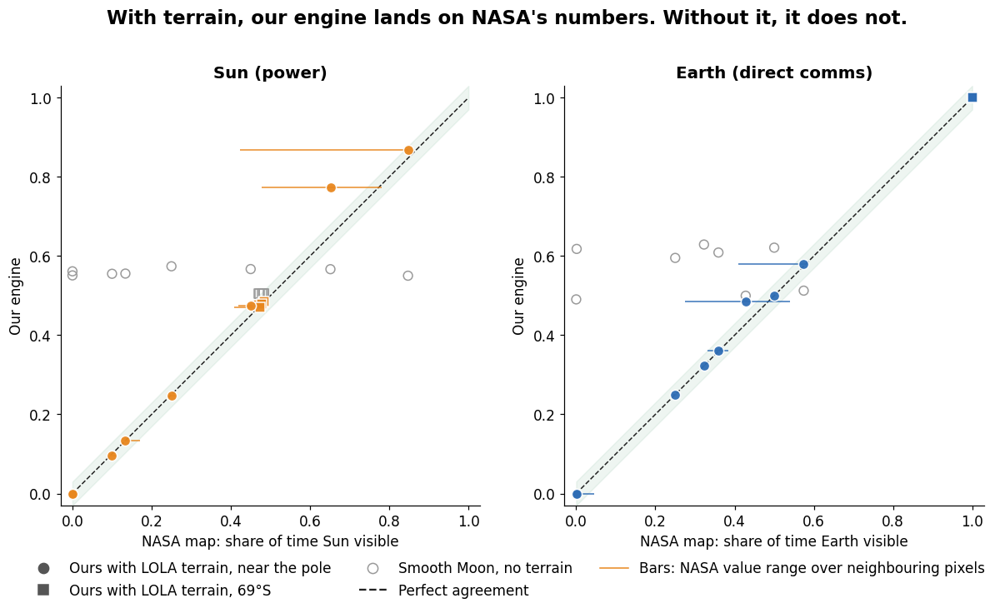
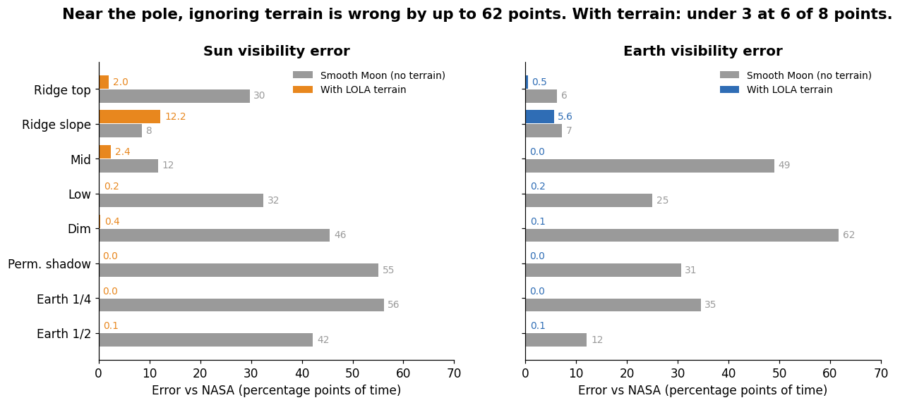
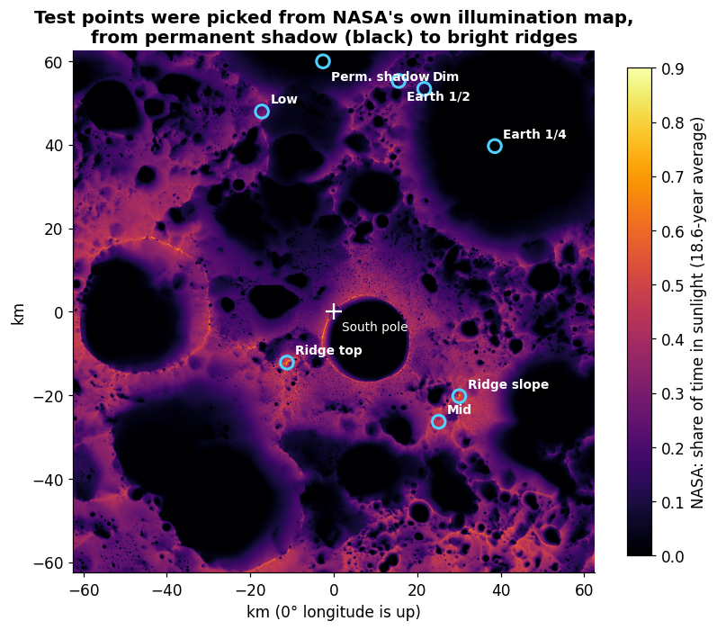
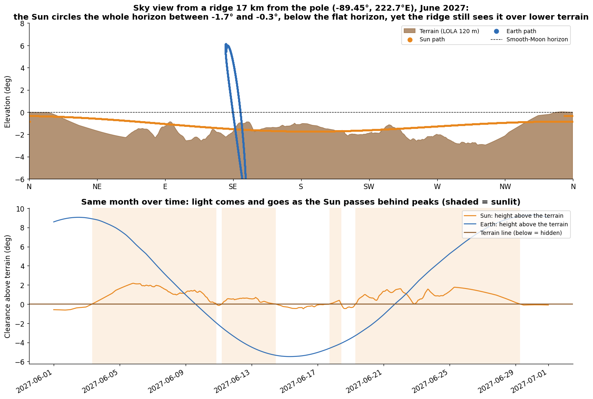
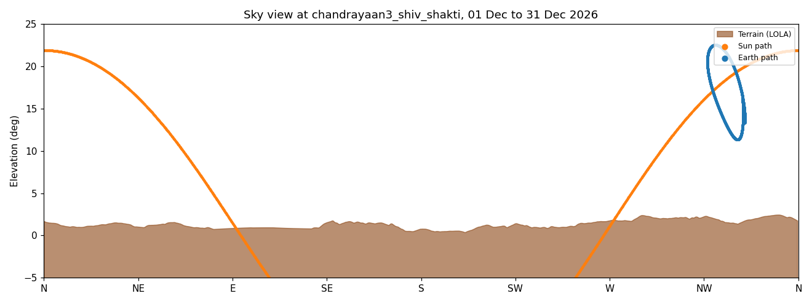

We checked our engine against NASA's own maps of how often each spot near the lunar south pole sees the Sun and Earth. With LOLA terrain it matches NASA closely, including permanent shadow and blocked Earth. Without terrain, it is badly wrong near the pole.

Each dot is one test point. On the dashed line, our number equals NASA's. Filled dots (our engine with terrain) sit on the line. Hollow grey dots (smooth Moon, no terrain) are scattered: they predict about 55% sunlight everywhere, even at a spot NASA says is in permanent shadow. Horizontal bars show how much NASA's own value changes between neighbouring 120 m pixels.

Error in percentage points of time. With terrain, six points are within 2.4. The two ridge points differ more (2 and 12 points). On a ridge, moving one pixel changes NASA's own value by up to 40 points, so both of ours stay inside NASA's local range. The smooth Moon misses by up to 62 points.

The 120 km around the south pole, coloured by NASA's average sunlight. We chose test points straight from this map so they cover every case: permanently dark crater floors, dim slopes, and the bright ridges where landers want to go.

Top: the Sun circles the whole horizon, slightly below the flat horizon. The ridge still sees it because the terrain around is even lower. Earth swings up and down in the south-east. Bottom: over the month, light comes and goes as the Sun passes behind peaks, and Earth is hidden for about 12 days. This is the information planners need, and it only appears with terrain.

Further from the pole the Sun rises, climbs to 22° and sets, and Earth stays high. Terrain still matters: here it delays sunrise by 5 hours and brings sunset 10 hours earlier in December 2026.
| Check | Against | Result |
|---|---|---|
| Smooth-Moon visibility | Horizons' own Sun and Earth flags, 30 days | 0 mismatches |
| Terrain map east/west orientation | LOLA global map | corr. 0.986 (mirrored: −0.08) |
| Sunlight at 69° S, 5 points | NASA map, 18.6-year average | within 0.6 pts |
| Sun and Earth near the pole, 8 points | NASA maps, 18.6-year average | 6 within 2.4 pts; ridges 2 and 12 |
| 10-minute vs 1-minute steps, ridge, 4 months | Our own engine | same windows, ±0.02 h |